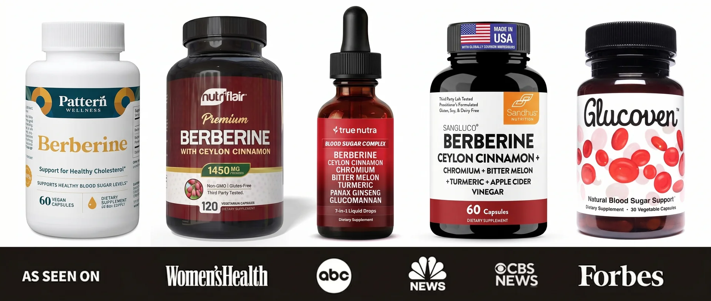
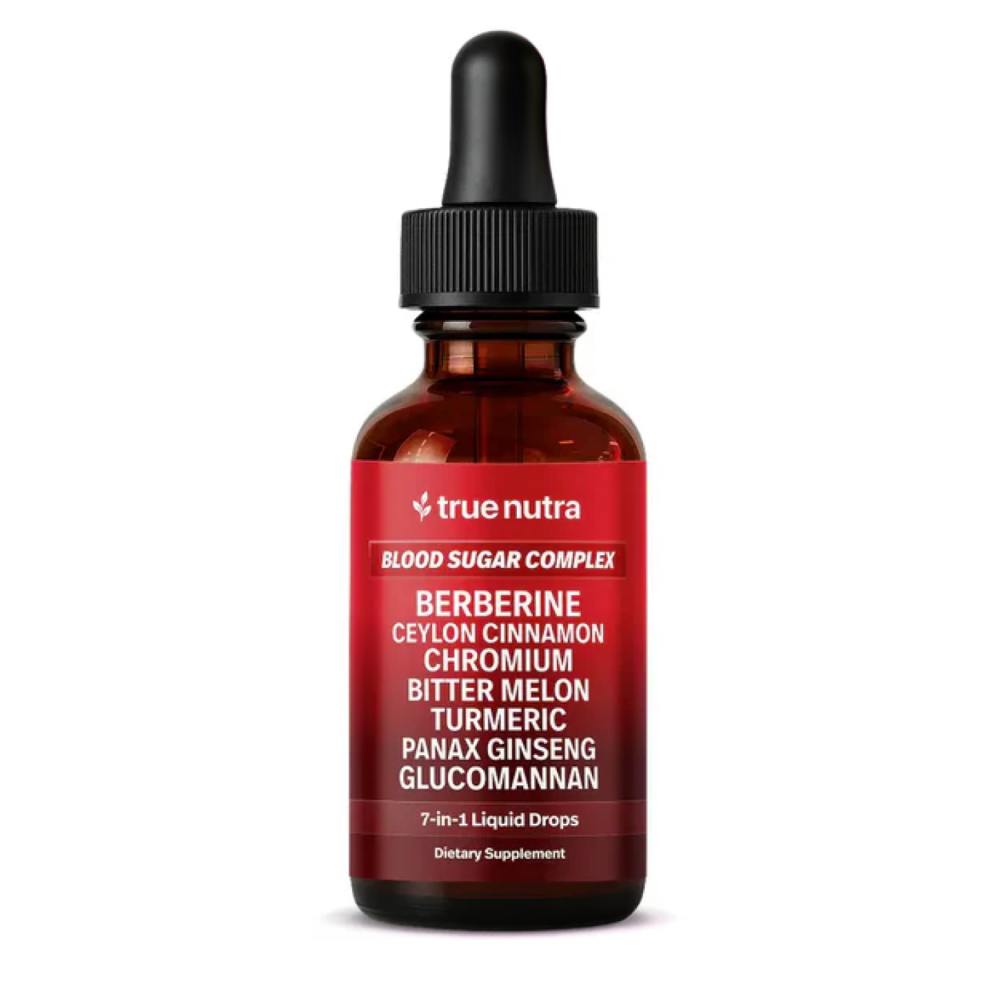
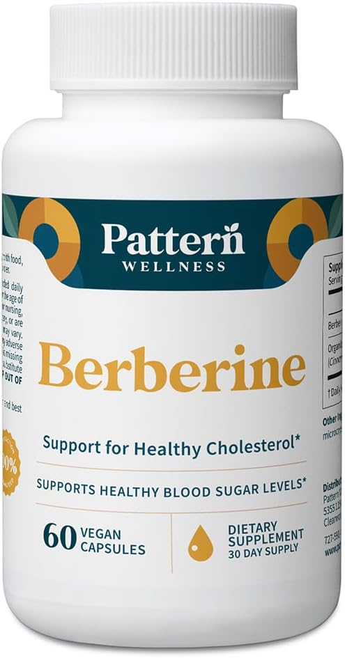
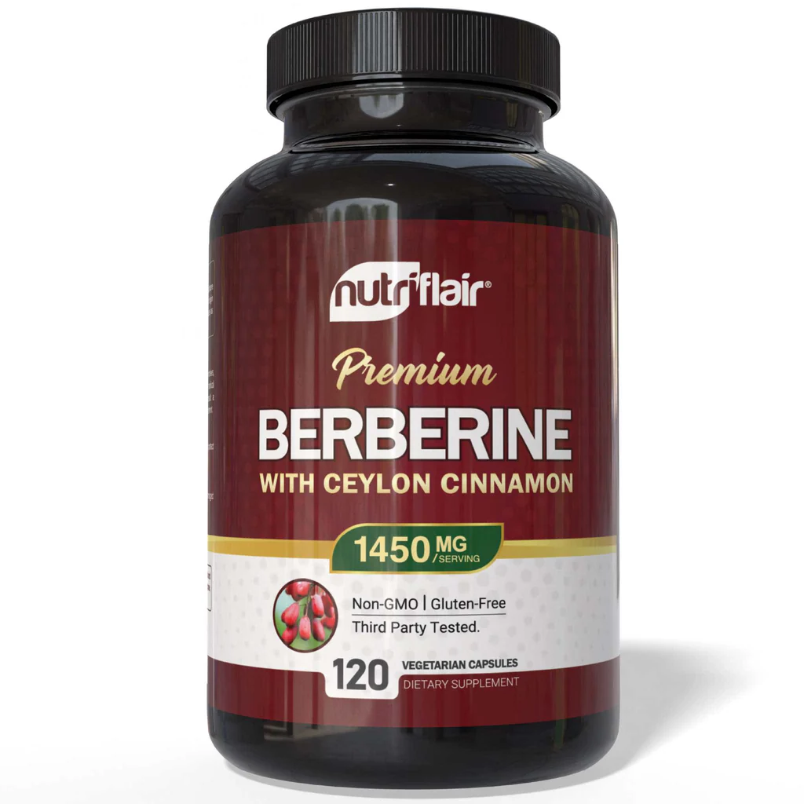
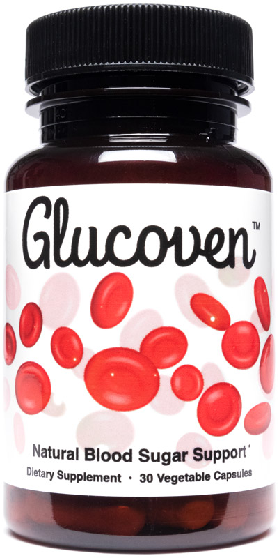
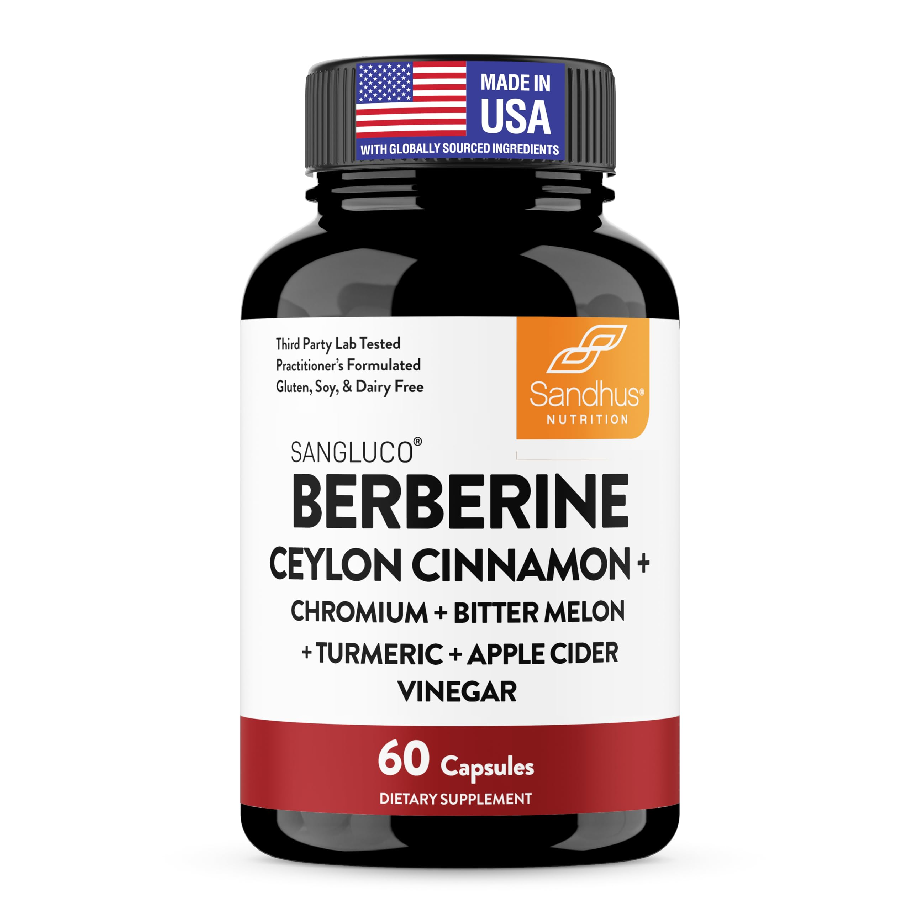
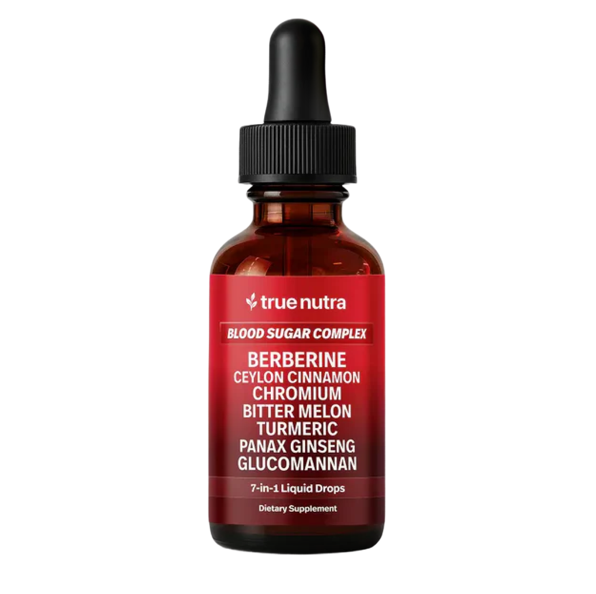

The Top 5 Blood Sugar Supplements of 2025 - Ranked, Tested, And The One That Outperformed Every Other Formula We Tried
Blood sugar supplements are everywhere right now, but most barely move the needle. We compared formulas, dosing, delivery methods, and real results so you don't waste another month on a product that quietly does nothing.

Over the past year, blood sugar supplements have become the most-searched natural option for lowering A1C, killing sugar cravings, and stopping the energy crashes that come with unstable glucose. The reason is simple: blood sugar isn't just a number on a lab report, it's how you feel every hour of the day. When it spikes after a meal and crashes 90 minutes later, you get the brain fog, the afternoon slump, the relentless sugar cravings, the belly fat that won't budge, and the slow creep of your A1C climbing one decimal at a time. The right blood sugar formula can flip all of that and bring your numbers, your cravings, and your energy back under control.
But with so many blood sugar products out there - capsules, drops, powders, single-ingredient pills, multi-ingredient blends - which ones actually work? That's exactly what we set out to find out.
Our team reviewed dozens of blood sugar supplements and narrowed the list down to the five most popular options people are buying right now. Then we put them to the test.
Here's what we found...
How We Ranked These Supplements
We scored each product on six key things:
-
Ingredient Stack
Does the formula have the full mix of ingredients to attack blood sugar from every angle, or is it just one or two? -
Real-World Effectiveness
Does it actually lower your numbers and your A1C? -
Post-Meal Spike Control
Does it flatten the glucose curve after eating, or do you still crash 90 minutes later? -
How Well It Absorbs
Does the format actually get the active ingredients into your bloodstream, or does most of it pass through without doing anything? -
Transparency & Quality
Are doses fully disclosed? Is the cinnamon real Ceylon, or cheap cassia that can damage your liver in daily doses? - Real User Results: Are users actually seeing lower numbers on their glucose meters, fewer cravings, and steady energy?
Our Top 5 Blood Sugar Supplements
#1 - True Nutra 7-in-1 Blood Sugar Complex
(Best Overall · Best for Lowering A1C, Crushing Cravings & Stopping Spikes)
Overall Grade A+


From the very first week of testing, True Nutra's 7-in-1 Blood Sugar Complex moved every marker faster than anything else we tried, with users reporting lower fasting glucose within days, flatter post-meal numbers within two weeks, sugar cravings that quietly disappeared, steady all-day energy and normal morning numbers for the first time in years, and A1C drops of up to 2.5% over consistent use. Multiple testers said it was the first natural supplement that actually moved their bloodwork.
The reason it works so well is the formula: seven research-backed ingredients hitting blood sugar from every angle, and the only formula on this list that combines Berberine with Organic Ceylon Cinnamon (the only safe form for daily use), Bitter Melon, and Chromium Picolinate, plus a supporting herb stack that handles inflammation, insulin response, and cravings. And instead of being trapped in a capsule, True Nutra delivers all of it as easy sublingual drops that absorb directly under the tongue, getting far more of each ingredient into your bloodstream than any capsule on the market.
Special Offer: Buy 1 Get 1 FREE + Free Shipping for Our Readers (Limited Supply)
Visit the SiteWhy It's #1
Lower fasting glucose within days - users notice the difference in the first week
Flatter post-meal numbers and cravings gone within 1-2 weeks
Measurable A1C drops of up to 2.5% at your next bloodwork
One easy dropper a day - no handful of capsules, far better absorption than pills
90-Day Money-Back Guarantee - three times the industry standard. Zero risk.
PROS
- Lowers A1C up to 2.5% with consistent daily use
- Flattens post-meal spikes within 1-2 weeks
- Kills sugar cravings inside the first two weeks
- Sublingual drops absorb far better than capsules
- Organic Ceylon Cinnamon (not the cheap cassia)
- Third-party lab tested
- 90-day money-back guarantee
CONS
- Only available through the official website
- Frequently sells out due to high demand
Our Experience: Testers saw lower fasting glucose within 3-5 days. By week two, flatter post-meal numbers and cravings were gone. By week four, steady all-day energy and the first noticeable A1C movement at their next bloodwork. Multiple testers said the same thing - this was the first natural supplement that actually showed up on their labs.
Bottom Line: If you want to lower your A1C, stop the spikes, kill the cravings, and get your energy back, True Nutra is the standout pick on this list.
We Reached Out to True Nutra & Locked In Buy 1 Get 1 FREE + Free Shipping For Our Readers (Likely to Sell Out Fast)
Visit the Site#2 - Berberine by Pattern Wellness
Overall Grade B+

Pattern Wellness is the typical Amazon blood sugar pick - decent brand, clean labeling, easy to find. But it's a single-ingredient berberine capsule, which means you're getting berberine and nothing else, with no cinnamon to stabilize glucose, no chromium to drive sugar into your cells, no bitter melon to flatten post-meal spikes, and no supporting herbs for cravings.
And here's the bigger issue: berberine in capsule form is one of the worst-absorbing supplements on the planet, with less than 5% of what you swallow actually reaching your bloodstream, while True Nutra's sublingual drops bypass that problem and start moving numbers within days.
PROS
- Recognizable brand with clean labeling
- Single-ingredient simplicity
- Decent third-party testing
CONS
- No cinnamon, chromium, bitter melon, or supporting actives
- Capsule berberine has under 5% absorption
- No real help on post-meal spikes or cravings
- 30-day guarantee vs. True Nutra's 90 days
Verdict: A single-ingredient capsule with the worst-absorbing form of berberine on the market. Slower and weaker A1C results than True Nutra.
#3 - Premium Berberine+ by NutriFlair
Overall Grade B


NutriFlair steps up from single-ingredient by adding Ceylon Cinnamon to the berberine base, and it's a popular Amazon seller with strong reviews. But two ingredients isn't a real formula, it's a starter pack that's still missing five of the seven angles your body needs to actually move A1C and stop the spikes, including the chromium that drives sugar into your cells, the bitter melon that flattens post-meal numbers, and the herbs that kill cravings.
And the same berberine absorption problem applies: less than 5% of what's in the capsule actually reaches your bloodstream where it can do anything.
PROS
- Adds Ceylon Cinnamon to the berberine base
- Established brand with strong reviews
- Reasonable price point
CONS
- Only 2 ingredients vs. True Nutra's 7
- Missing chromium, bitter melon, and the supporting herbs
- Capsule berberine has under 5% absorption
- 30-day return window vs. True Nutra's 90-day guarantee
Verdict: A step up from single-ingredient capsules, but still missing five of the seven angles your body needs, and still stuck with the capsule absorption problem.
#4 - Glucoven by Nutreance
Overall Grade C+


Glucoven is the most legitimate competitor on this list, with a multi-ingredient capsule that includes berberine, cinnamon, chromium, and a few supporting compounds, and on paper the ingredient list looks decent.
The problem is what's hiding behind the label: the brand doesn't tell you whether the cinnamon is real Ceylon or cheap cassia, and cassia contains coumarin that can damage your liver in daily doses, while the other ingredient amounts are hidden in a proprietary blend so there's no way to know if you're getting a real dose or just a sprinkle. And the whole formula still hits the same capsule absorption wall.
PROS
- Broader ingredient list than #2 and #3
- Includes chromium and cinnamon alongside berberine
CONS
- Cinnamon source not disclosed - could be the liver-damaging cassia
- Other doses hidden behind a proprietary blend
- Capsule format means most of it doesn't absorb
- Supporting ingredients often under-dosed
Verdict: Right idea on ingredients, wrong format to deliver them, and the undisclosed cinnamon is a serious red flag for anyone taking it daily.
#5 - Sangluco Berberine
Overall Grade C-


Sangluco is the kind of no-name brand that rides the natural-glucose wave without doing the work, with no manufacturing transparency, no public team, and no third-party verification you can look up, which is a real gamble for a supplement people take to manage their numbers.
The formula matches the brand's vagueness, with berberine in a capsule alongside a few minor additions and doses that aren't disclosed, and it hits every weakness on this list at once: capsule absorption under 5%, a thin supporting stack, no real chromium dose, no bitter melon, and no answer on whether the cinnamon is the safe Ceylon form or the liver-damaging cassia. User reports describe the same "I took it for two months and I'm not sure if it did anything" pattern.
PROS
- Contains berberine as the main active
- Lower price point
CONS
- No-name brand, limited transparency
- Missing chromium, bitter melon, and most supporting herbs
- Cinnamon source not disclosed
- Hidden doses on the rest of the formula
- Capsule format means most of it doesn't absorb
Verdict: Hits every limitation that holds blood sugar capsules back. The slowest, weakest results of any product we tested.
Why True Nutra Took the #1 Spot
True Nutra checks every box people actually care about:
-
The Right Ingredients
Seven research-backed ingredients covering every blood sugar angle, more than anything else on this list, including Organic Berberine HCl, Organic Ceylon Cinnamon, Bitter Melon, Chromium Picolinate, and a supporting herb stack that handles inflammation, insulin response, and cravings. -
The Right Delivery
Sublingual drops that absorb directly under the tongue and deliver the active ingredients straight into your bloodstream, instead of being stuck in a capsule that absorbs poorly. -
The Right Quality
Organic Ceylon Cinnamon (not the cheap cassia that damages your liver in daily doses). Standardized extracts. Third-party tested. Every headline ingredient fully disclosed on the label. -
The Right Results
Up to 2.5% A1C reduction. Fasting glucose drops within days. Post-meal spikes flattened inside two weeks. Cravings gone. Steady energy all day. -
The Right Guarantee
90-day money-back, no questions asked. Three full months to watch your numbers move, or your money back.
The Blood Sugar Supplement Buying Guide (So You Don't Get Burned)
Things to Look For
A Complete Multi-Angle Formula
Blood
sugar is controlled by multiple pathways including insulin
response, glucose uptake, post-meal spikes, cravings, and
inflammation. A single-ingredient pill only hits one angle. You
need a formula that covers all of them.
Sublingual Drops Over Capsules
Capsules
sound easy, but most of what's inside never makes it into your
bloodstream, especially with berberine. Drops that absorb under
your tongue deliver far more of the active ingredients into your
body where they can actually work.
Organic Ceylon Cinnamon - Never Cassia
The
most overlooked safety check in the category. Cassia contains
coumarin that can damage your liver in daily doses. Ceylon is
the only form that's safe to take every day. If the brand
doesn't proudly label "Ceylon," assume it's cassia.
Fully Disclosed Doses
You want to see
exactly how much of each ingredient is in the bottle. If they're
hidden in a "proprietary blend," they're probably hiding the
fact that the doses are too small to do anything.
A Real Money-Back Guarantee
Your numbers
take 60-90 days to fully respond. Any brand offering less than
90 days doesn't believe in their own formula.
Red Flags
Single or Two-Ingredient Formulas
Berberine
alone doesn't kill cravings. Cinnamon alone doesn't flatten
spikes. You need every angle covered.
Capsule Berberine
Less than 5% of capsule
berberine actually reaches your bloodstream. If the brand isn't
talking about absorption, you're paying for a dose your body
never receives.
Undisclosed Cinnamon Source
No "Ceylon" on
the label means assume cassia, which can damage your liver in
daily doses.
Hidden Doses
Brands hide doses they're not
proud of.
30-Day Guarantees
Not long enough for your
numbers to move. They know you'll quit before bloodwork shows
anything.
Frequently Asked Questions
Will this interact with metformin or other blood sugar
medications?
The ingredients in a quality blood sugar formula affect how
your body manages glucose. If you're on metformin, insulin, or
any blood sugar medication, talk to your doctor before adding it,
especially the first few weeks as your numbers start moving.
How fast will I see results?
Fasting
glucose drops within 3-7 days. Post-meal spikes flatten inside
1-2 weeks. Cravings drop off around week two. A1C changes show up
at your next 60-90 day bloodwork.
Is this safe long-term?
Yes. Every
ingredient has a long history of daily use, the cinnamon is the
safer Ceylon form (not cassia), and the doses are within the safe
daily range research supports.
Do I have to change my diet?
No, but you'll
see faster, bigger results if you do.
What if my numbers don't move?
Send the
bottles back for a full refund within 90 days. No questions
asked.
Can men and women both take it?
Yes. Safe
and effective for any adult dealing with rising glucose, sugar
cravings, or a creeping A1C.
Are Blood Sugar Supplements Really the Best Solution?
There's no such thing as a magic pill, but a
well-formulated, properly-delivered blood sugar supplement is one
of the most reliable natural levers you have for moving your
numbers. Diet and exercise are slow and brutal to stick with, and
medications come with side effects most people would rather avoid.
Our research showed True Nutra's 7-in-1 Blood Sugar Complex came out on top. Most users see lower fasting glucose in the first week, flatter post-meal numbers within 1-2 weeks, cravings gone by week two, and measurable A1C movement at their next 60-90 day bloodwork, with drops of up to 2.5% on the A1C scale. Take it daily, and the results stick.
Special Offer for Our Readers
After our evaluation, we reached out to True Nutra and they agreed to extend an exclusive deal for NutriHealth Forum readers:
- Buy 1 Get 1 FREE on the 7-in-1 Blood Sugar Complex
- FREE Shipping on your order
- Full 90-day, no-questions-asked money-back guarantee
At this price, with a full 90 days to try it risk-free, it's the perfect time to finally get your numbers moving in the right direction.
CLAIM YOUR DISCOUNT NOW
Our Top Pick - True Nutra 7-in-1 Blood Sugar Complex
- The most complete formula on the market - seven research-backed ingredients covering every blood sugar angle
- The only formula that combines berberine with Ceylon Cinnamon, Bitter Melon, Chromium, and a supporting herb stack
- Sublingual drops that absorb directly under the tongue for far better delivery than capsules
- Users report lower fasting glucose, flatter spikes, cravings gone, and A1C drops of up to 2.5%
- 4.8/5 star rating
- 90-day money-back guarantee